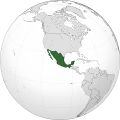
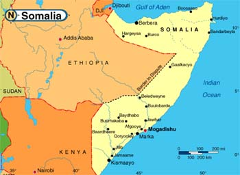

Na tej stronie poznasz informacje na temat najciekawszych miejsc na świecie
Jeśli wybór z najniebezbieczniejszymi miejscami cie nie przekonuje polecam zajrzeć na tę strone tutaj
| Bezpieczne | Niebezpieczne |
| Polska | Meksyk |
| Holandia | Somalia |
| Niemcy | Korea Północna |
| Wielka Brytania | Rosja |
O bezpiecznych miejscach nie warto za dużo pisać, ponieważ bez ryzyka nie ma zabawy
A teraz krótko o paru niebezpiecznych miejscach na Ziemi:
Meksyk:
Tutaj rządzą gangi narkotykowe takie jak MS 13, z którymi żaden człowiek o zdrowych zmysłach nie chciałby mieć doczynienia. Nie możemy też zapomnieć o łatwym dostępie do broni palnej.
Somalia:
Tutaj mogą cię porwać dla okupu. Najczęściej to bojówkarze lub piraci, ewentualnie mafia